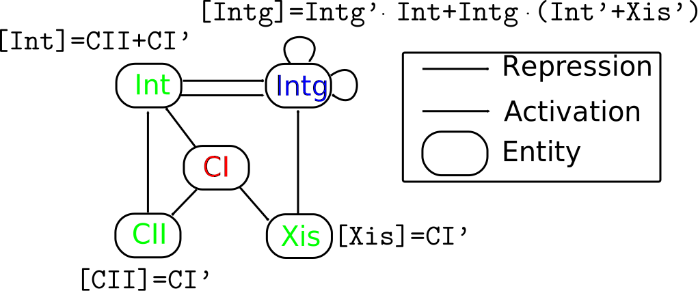
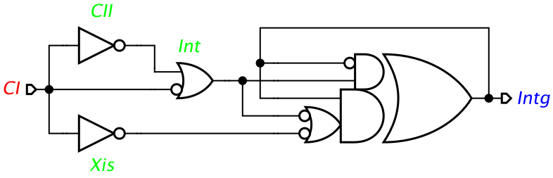
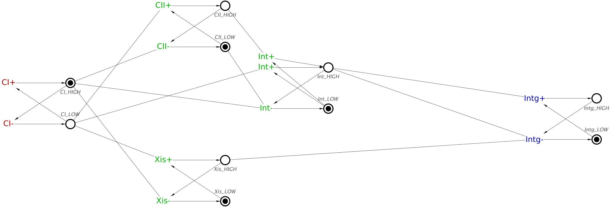
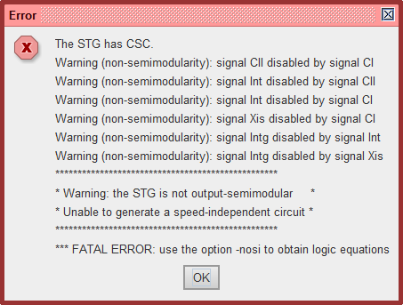
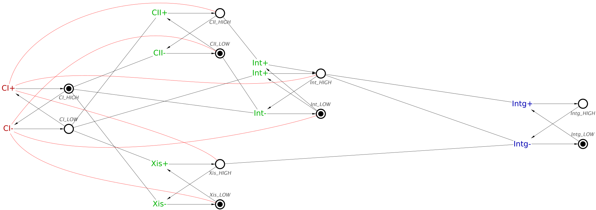
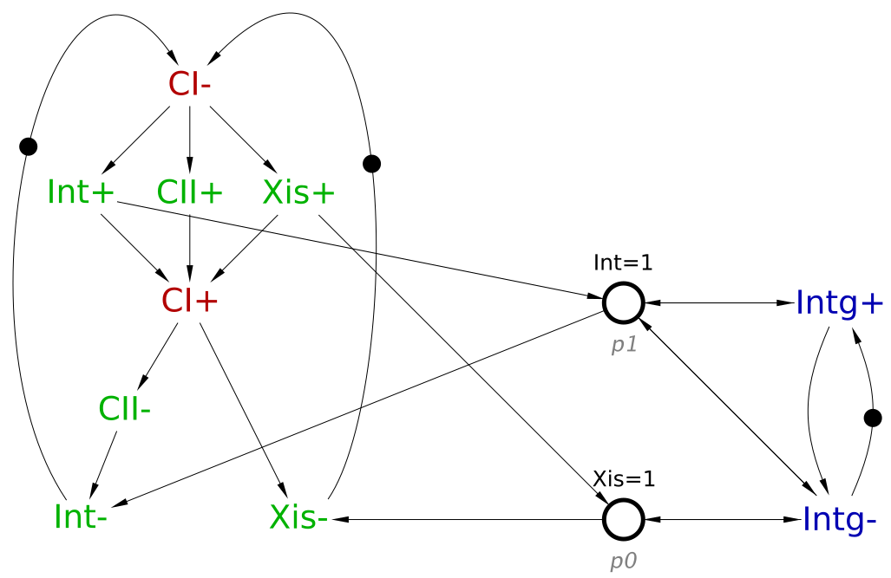

Table of Contents
Modelling Genetic Regulatory Networks with STGs: Lysis-Lysogeny Switch in Phage λ
Biological systems are controlled by genetic regulatory networks (GRNs), which comprise complex control structures of interacting entities including genes, proteins and metabolites. Given the lack of quantitative data concerning exact reaction rates and the noise associated with such data, qualitative modelling techniques have emerged as an important first approach to understanding GRNs. Below we develop a simple yet interesting qualitative STG model of a real GRN.
Phage λ
The temperate bacteriophage λ (or λ phage or just λ) is a virus that infects the bacteria Escherichia coli (E. coli). After infection of the host cell, a stochastic decision is made by λ based on environmental factors between two very different methods of reproduction. In most cases, λ enters the lytic cycle, where it generates as many new viral particles as the host cell resources allow. Upon resource depletion, an enzyme is used to break down and lyse the cell wall, releasing the new phages into the environment. Alternatively, the λ DNA may integrate into the host DNA and enter the lysogenic cycle. Here, genes expressed in the λ DNA synthesise a repressor which blocks expression of other phage genes including those involved in its own excision. As such, the host cell establishes immunity to external infection from other λ phages, and the virus is able to lie dormant, replicating with each subsequent cell division of the host. It may enter the lytic cycle when the host cell is stressed, e.g. by certain chemicals or UV radiation.
Model Construction
To model the GRN controlling the lysis-lysogeny switch in λ, we use the following asynchronous Boolean network presented in [1] as the starting point:

A Boolean network consists of several entities representing genes, proteins, etc. Each entity can be in one of two possible states, either active (e.g., a gene is expressed or a protein is present) represented by logical 1 or inactive (e.g., a gene is not expressed or a protein is absent) represented by logical 0. The behaviour of each entity is described by a Boolean next-state function, which, given the current states of the entities that affect it, returns the next state of the entity. The above Boolean network is asynchronous, i.e. entities update their states independently of other entities' updates (in contrast to synchronous Boolean networks where all entities update their states together; however, synchronous updates are biologically unrealistic [1], which leads to reservations about the results obtained from such models).
Integration of the λ DNA into the host DNA requires the presence of integrase Int. Furthermore, the λ DNA remains integrated unless excisionase Xis is also present. Thus, integration and excision occur in both directions when both Int and Xis are present, and the stochastic lysis-lysogeny choice is qualitatively modelled as an arbitrating choice. Intg is used as an output to indicate the status of this process, taking the value 1 if the λ DNA is integrated and 0 if it is not integrated or has been excised. Both Int and Xis are repressed by λ repressor CI, which we regard as an input since it is regulated outside the scope of this model. However, Int is also activated by CII, itself under negative control from CI.
Unfortunately, asynchronous Boolean networks tend to have too much behaviour, not all of which is realisable in practice. Their behaviour also tends to have many non-converging choices when selecting the next state. In reality, many such choices are resolved statically, either by assuming that the environment of the biological system is slow (i.e. the system always has enough time to react to changes in the environment), or by relative speeds of chemical reactions; that is, the behaviour in fact has much fewer choices than such models suggest. (This may explain why synchronous networks, which never have any choices, were often favoured over asynchronous ones, in spite of synchronous updates being biologically unrealistic.)
To address this problem, one can consider an asynchronous Boolean network in the context of speed-independent asynchronous circuits [2]. Indeed, each entity with its next-state function can be considered as a gate in a circuit. In particular, the circuit corresponding to the above Boolean network is as follows:

Download this model: lambda.circuit.work (4 KiB).
Exercise 1: Model Analysis
One can automatically convert this circuit to an STG using Conversion→Signal Transition Graph:

This STG models the behaviour of the original Boolean network, and as such, contains too much behaviour. Moreover, an attempt to synthesise this STG as a speed-independent asynchronous circuit using Synthesis→Complex gate [Petrify] reveals numerous violations of output-persistency (note that semimodularity in the report below is a property similar to output-persistency):

Hence the model must be refined by identifying the points where it violates output-persistency and then factoring in appropriate assumptions about the environment's behaviour and relative reaction rates to resolve the associated glitches [2]. Since the lysis-lysogeny decision is a stochastic phenomenon, it is not resolved and remains in the final STG model.
A detailed analysis reveals that the following violations of output-persistency can occur in this STG:
Xis+can be disabled byCI+Xis-can be disabled byCI-Int+can be disabled byCI+Int-can be disabled byCI-CII+can be disabled byCI+CII-can be disabled byCI-Intg-can be disabled byInt-Intg-can be disabled byXis-Intg+can be disabled byInt-Int+can be disabled byCII-
Exercise 2: Model Refinement
These violations of output-persistency indicate the areas of the STG which require refinement. We first consider output-persistency violations 1-6, which involve choices between input CI+ and internal transitions. Such choices require the system and its environment to select the same option, which is challenging (in circuits one would have to deploy some Asynchronous Arbitration Primitive, and this works only for read-consume choices). In biological systems these choices are unrealistic, and likely indicate that the environment behaviour is not modelled correctly (note that the translation of a circuit to STG assumes that the environment can change the value of any input at any time, which is usually a coarse overapproximation). Hence one should resolve such choices by trying to understands the environment better and amending the model. This can often be done by assuming that the environment is slow enough to allow the system to stabilise (though this is often a reasonable assumption, it has to be checked in the wet lab). In other words, at any reachable marking where firing an input transition can disable an internal or output transition, we assume that the input transition does not fire. This can be achieved by modifying the STG to disable the input transition at any such marking.
For example, consider the first violation of output-persistency: Xis+ can be disabled by CI+. By adding a read arc from place Xis_HIGH to CI+ (shown in red below) one can ensure that CI+ is disabled whenever Xis+ is enabled:

Similarly, one can resolve the other violations of output-persistency involving input CI – see the read arcs in red in the picture below:

Interestingly, these transformations also happen to resolve violation 10 (Int+ can no longer be disabled by CII-); apparently, this violation occurs only in states that can be reached through the “messy” behaviour that has been now removed by the above transformations. This leaves only violations 7-9 in the amended model. Violations 7 and 8 show that excision (represented by transition Intg−) when Int and Xis are 1 can be pre-empted if Int− or Xis− fires first, whilst violation 9 shows that integration (represented by transition Intg+) can be pre-empted if Int− fires first. These remaining output-persistency violations are local to the system (unlike the ones involving input CI), and so are implementable. They are at the very heart of the lysis-lysogeny switch in λ (which is a stochastic phenomenon in practice [1]) and so are not resolved.
Exercise 3: Model Re-synthesis
The above STG can now be simplified using Conversion→Net synthesis [Petrify], with the following result (manual layout was performed):

This model is much easier to understand than the original Boolean network, for several reasons. First of all, by assuming that the environment is slow, some unrealisable (and messy!) behaviour has been removed. Moreover, the causality, concurrency and choices between the actions are now clearly visible. Furthermore, this simplified STG can be naturally separated into two components capturing the crucial mechanisms governing the lysis-lysogeny switch:
- Component 1 (left) involves input
CIand internal signalsCII,IntandXis. At the initial state, it waits for the environment to lowerCIindicating the absence of immunity, after whichCII+,Int+andXis+can fire in any order. This component then waits for the environment to raiseCI, which results in firing ofXis−andCII−(in any order), with the latter followed byInt−, which returns the component to its initial state.
- Component 2 (right) is a simple flip-flop for
Intg, which is controlled by the values ofIntandXisin the first component. Note that the only connections between the two components are the read arcs between places of the former and transitions of the latter, i.e. the latter accesses the former in the read-only fashion and hence does not affect its behaviour.
After Component 1 has raised Int, Intg+ is able to fire representing the integration of the λ DNA into the host cell. Once Component 1 has raised both Int and Xis, Intg can freely oscillate, i.e., there are no stable states in the absence of immunity [1]. Similarly, once the environment has raised CI, Component 1 executes Xis− concurrently with CII− followed by Int−; the outcomes of the arbitrations between Intg+ and Int− and between Intg− and Int− or Xis− determine the stable state of Intg in the presence of immunity. These arbitrations exactly correspond to the output-persistency violations 7-9 still remaining in the STG and not involving inputs.
===== Feedback =====
- As discussed in https://www.dokuwiki.org/plugin:include#controlling_header_size_in_included_pages, by default, the headers in included pages start one level lower than the last header in the current page. This can be tweaked by adding an empty header above the include:\\
====== ====== {{page>:tutorial:feedback&inline}} - For offline help generation the content of
feedbackpage should be temporary wrapped in<WRAP hide>. Note that the headers still propagate to the table of contents even if inside the hidden wrap. Therefore the Feedback title needs to be converted to something else, e.g. to code by adding two spaces in front.